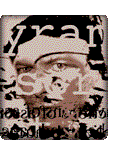
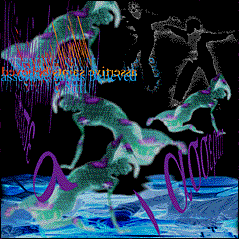
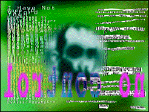
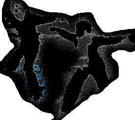

DAVID BOWIE returns this fall with special guest NINE INCH NAILS in a meeting of two of rock's most acclaimed and visionary performers. The much-rumored Outside tour launched September 14 in Hartford, CT and features sets by both artists in addition to a surprise opening act. The trek - set to last for six weeks in North America - will visit mostly outdoor amphitheaters and have a ticket price of $28.50 There will be reserved seating at each concert, with all of the shows having a general admission section in the pit.  For DAVID BOWIE, who is headlining the tour, this will mark his first solo concert tour since the 1990 "Sound and Vision" trek. It also represents BOWIE"s first tour with new solo material in eight years, coinciding with the September 26 release of his Virgin Records debut album, OUTSIDE. The album reunites BOWIE with producer and collaborator Brian Eno for the first time since the pivotal '70s releases, Low, Heroes and Lodger, a trilogy of experimental works that established a blueprint for an array of industrial and other contemporary artists. |
 Highlights of Outside include "The Hearts Filthy Lesson"- a special version of which has been remixed by TRENT REZNOR - "Hallo Spaceboy," "We Prick You," "I'm Deranged" and "Voyeur Of Utter Destruction (As Beauty)." Set to perform onstage in a stripped down, non-theatrical format, BOWIE will be joined by a group of musicians who've played with him at various points in his career - guitarist Carlos Alomar (who has worked with BOWIE since 1974), guitarist Reeves Gabrels (Tin Machine), pianist Mike Garson (Ziggy Stardust/Aladdin Sane), background vocalist George Simms (BOWIE'S 1983 tour) --plus ex-Gang of Four bassist Gail Ann Dorsey, synthesist Peter Schwartz and drummer Zachary Alford. Opening for DAVID BOWIE will afford NINE INCH NAILS yet another opportunity to captivate a new audience. Besides the unique pairing of REZNOR and BOWIE, whose album Low influenced TRENT during the recording of The Downward Spiral, NIN's live show alone promises to unite and turn on two generations of fans. TRENT REZNOR and his live band - Chris Venna (drums), Charlie Clouser (keyboards), Robin Finck (guitar) and Danny Lohner (guitar and bass) - eagerly prepare to seduce this hybrid audience by sharing the stage with DAVID BOWIE.  |